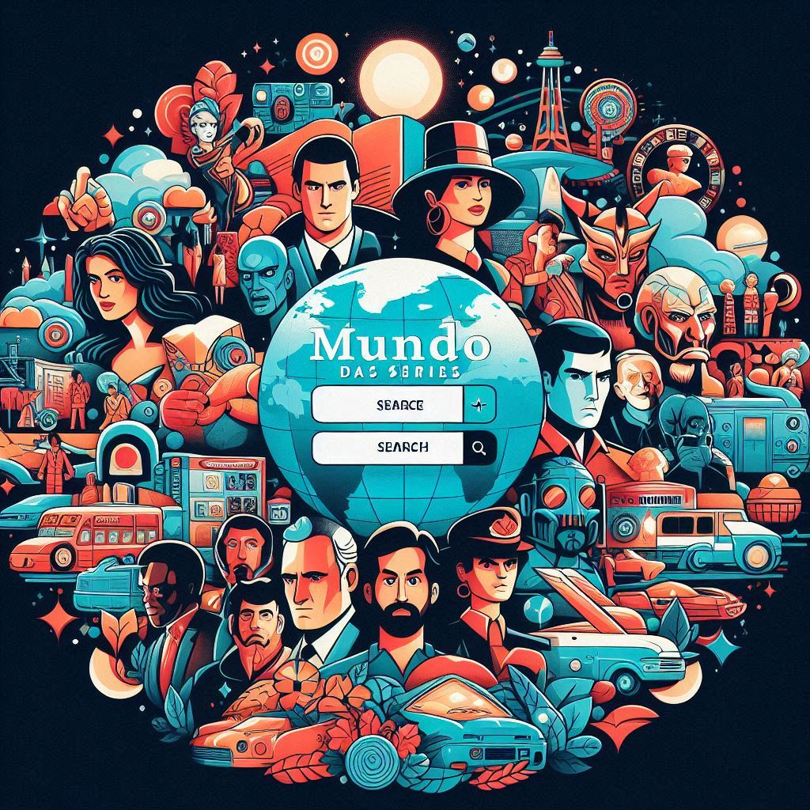

Sobre o Mundo das séries
O site "Mundo das Séries" foi criada no ano de 2020, pela aluna de Tec. em TI, Aila Vitória Alemão, que esta se formando pela rede de ensino, SENAI.
Aqui, a paixão por séries de TV é o que nos move. Sabemos que, em um universo de inúmeras opções, encontrar a próxima série perfeita para assistir pode ser um desafio. É por isso que criamos o Mundo das Séries - seu guia confiável no vasto universo das séries de televisão. Nós nos dedicamos a explorar todos os cantos do mundo das séries, desde os clássicos atemporais até as novidades mais quentes do momento. Nossa missão é ajudar você a descobrir séries que irão capturar sua imaginação, provocar seu pensamento e tocar seu coração. Navegue por gêneros, explore nossas recomendações personalizadas, leia sinopses detalhadas e críticas imparciais. Seja você um fã de dramas emocionantes, comédias hilárias, thrillers de suspense ou aventuras de ficção científica, temos algo para todos. Então, prepare a pipoca, aconchegue-se no sofá e deixe-nos guiá-lo em sua próxima aventura televisiva. Bem-vindo ao Mundo das Séries - onde sua próxima série favorita está esperando para ser descoberta!